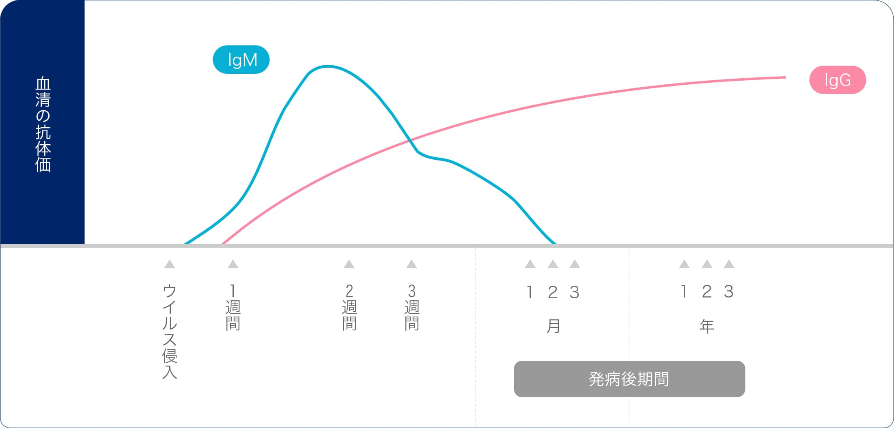
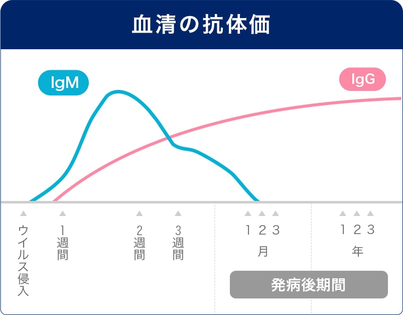

西鉄天神駅から徒歩1分！ 19時まで受付！
西鉄天神駅から徒歩1分！ 19時まで受付！
-
0120-133-220
受付 10:00～19:00 不定休
telephone -
アクセス
access -
来院予約
reservation -
お問合わせ
mail
ANTIBODY TEST クイック検査について
クイック検査（抗体検査）とは
患者様の体内にウイルスに対して抗体の有無をキットを使用して判定します。
通常検査と違い、少量の血液で検査を行う為、身体的負担が少なく、検査キット
を使用することにより、判定までに時間がかからないという特徴があります
身近な人が感染症にかかってしまった、過去に思い当たる節があるけど症状はない方など、過去に感染していたかを調べることにより、他人に感染させるリスクを低減することができることになります。
通常検査
抗体とは異物が体内に侵入した際、ウイルスなどの異物に対抗するために産生される物質です。産出された抗体は主に血液中や組織液中に存在し、役割と働く場所に違う抗体が５種類存在しています。ウイルスに感染したときに最初に作られる抗体IgMと数々のウイルスに対して抗原を含む抗体IgGの２つの抗体の有無を調べることにより過去に感染していたかどうかを判定することができます。
-
- IgM抗体
- ウイルスに感染した初期段階（７日以内）で生成され
短期間で消滅する抗体
-
- IgG抗体
- ウイルスに感染したのち、IgM抗体に遅れて出現
次第に減りながら長期間血液中に存在する抗体です


※検査結果で陽性判定が出た場合、すでに抗体を持っていると考えられますが、再感染しないということではありません。
※陰性判定の場合、体内に抗体がないため、感染していた可能性は低いですが、今後の感染リスクが高いため、注意が必要です。